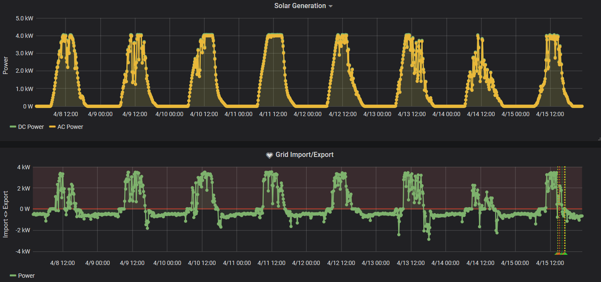
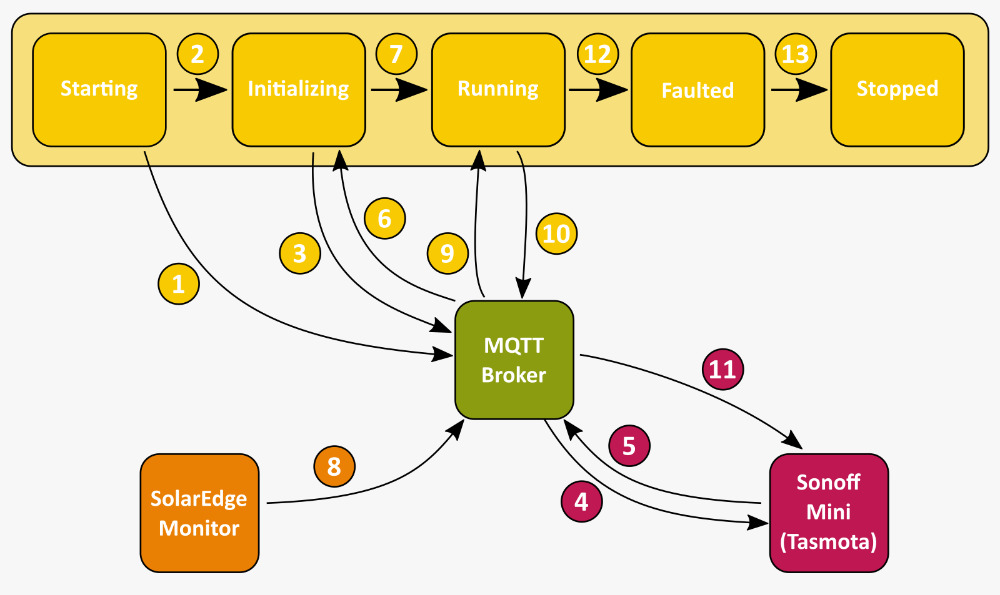
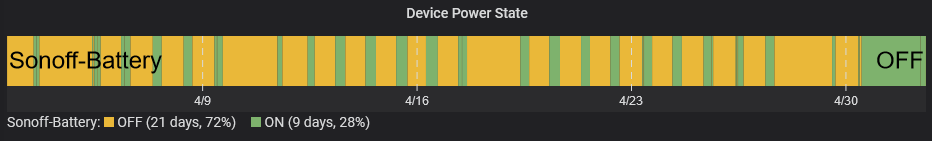

Background
I'm taking a quick break from my "Many Platforms, one world" blog series to reprise an old - but related - series on using technology to promote sustainability. In Part 1 of this series I showed how my family uses SolarEdge.Monitor to extract, persist and visualize the energy being produced by our solar panels. In this post I aim to show how I use the data produced by SolarEdge.Monitor to automatically optimize our electricity usage.
Maximizing Self-Consumption / Minimizing Imported Energy
The data collected by SolarEdge.Monitor shows the best times to turn on electrical appliances around the house like the washing machine and dish washer. Unfortunately, over the summer we still end up with generation/consumption patterns that look like this:
As you can see, on sunny days, we generate way more electricity than we consume and over night we consume more electricity than we would like.
The obvious answer here would be to supplement our solar power system with a battery which would be charged with the excess energy we generate during the day and discharged during the evening. We have discussed this at length and, unfortunately, we still don't feel the cost / RoI balance is there to justify buying a solar battery at this time.
Working Smarter
So if the obvious answer isn't the right answer (yet), what can we do? Well, when we thought about this problem, we realised that there are a lot of electrical appliances/devices that are used during the day but that sit in standby overnight sipping energy. If we turned these off rather than being on standby we could potentially cut our overnight consumption.
Furthermore, from a sustainability point of view, we have a number of devices around the house that use normal domestic batteries ('AA' or 'AAA'). If we moved to using rechargeable batteries and charged them with excess solar energy then we could further maximise our self-consumption and reduce the number of batteries we buy.
Again these are fairly obvious actions to take but extremely onerous to perform on a daily basis. If only there were something that could detect when we're exporting energy and turn these devices on or, conversely, when we're importing energy and turn these devices off.
PowerFull
And so I wrote PowerFull.
An open-source .NET Core utility for automatically controlling device power via MQTT.
Once supplied with MQTT and device information, PowerFull is able to monitor the levels of electricity being imported or exported and turn devices on or off appropriately.
As with SolarEdge.Monitor, PowerFull is a .NET Core application which can natively be containerized and composed with other applications. A full description of how to configure and run PowerFull is available is both the source code repository and the Docker Hub pages.
Sonoff Mini
My first application of PowerFull was to use excess solar energy to charge rechargeable batteries. I already had a decent 12-way battery charger (courtesy of IKEA) which I decided to control with one of these:

A Sonoff Mini.
Now using Sonoff to control devices is nothing new and people have been flashing custom firmware - most often Tasmota - to these devices for years. The Sonoff Mini however makes flashing custom firmware easier than ever with a factory supplied "DIY Mode". You see, historically, if you wanted to flash a Sonoff device with new firmware, you'd need an FTDI module to transfer the new firmware to the Sonoff device. With "DIY Mode" it's as simple as connecting a jumper using a specific tool to flash a firmware over Wifi. A guide to flashing the Sonoff Mini can be found here.
Furthermore, while PowerFull can be configured to work with a variety of devices via configurable MQTT messages, it is provided with a "Theme" that pre-sets all configuration values such that they are compatible with Tasmota.
Operation
The diagram and associated notes below show how PowerFull interacts with SolarEdge.Monitor and the Sonoff Mini to control power states:
- PowerFull begins in the Starting state in which it connects to the MQTT broker and subscribes to required topics (
Device.PowerOffRequestTopic,Device.PowerOnRequestTopic,Device.PowerStateRequestTopic,Device.PowerStateResponseTopic,Messaging.PowerReadingTopic) - PowerFull transitions to the Initializing state
- PowerFull request power state (by sending
Device.PowerStateRequestPayloadonDevice.PowerStateRequestTopic) from all devices (concurrently), waiting to receive a response from the device (on theDevice.PowerStateResponseTopic) for up to 10 seconds. - Broker forwards '
' on topic cmnd/%deviceId%/POWERto Sonoff device. - Sonoff responds by publishing current power state ("ON" or "OFF") on topic "stat/%deviceId%/POWER"
- PowerFull uses
Device.PowerStateResponseOnPayloadRegexandDevice.PowerStateResponseOffPayloadRegerto determine state of device. Any device that doesn't respond within 10 seconds or for which the response is not matched by the power state regex values is left in an 'Unknown' state and no further interaction is performed. - PowerFull transitions to the Running state.
- SolarEdge.Monitor publishes regular power reading message to the "home/solar/meter1readings" topic.
- Power reading messages are received by PowerFull's subscription to the
Messaging.PowerReadingTopicand the current power reading is extracted from the payload of the message via theMessaging.PowerReadingPayloadValueRegex. - Power reading is averaged across
Service.AveragePowerReadingAcrossMinutesminutes and if it is:
- above the
Service.ThresholdToTurnOnDeviceWattsvalue then theDevice.PowerOnRequestPayloadis sent to theDevice.PowerOnRequestTopicfor the next device to be turned on; or - below the
Service.ThresholdToTurnOffDeviceWattsvalue then theDevice.PowerOffRequestPayloadis sent to theDevice.PowerOfRequestTopicfor the next device to be turned off
- Broker forwards the payload "ON" or "OFF" on topic "cmnd/%deviceId%/POWER" to Sonoff device which turns it's output on or off respectively.
Steps 8-11 repeat until service is encounters a fault or halt at which point:
- PowerFull transitions to a Faulted state where all subscriptions and resources are disposed
- PowerFull transitions to the Stopped state where no further processing occurs
* All terms in Code Format represent PowerFull configuration values. Configuration values can be specified on the command-line or via environment variables. You can see an example of the latter in the following section.
Docker
As shown in Part 1, I use Docker Compose to run my Smart Home infrastructure. Adding PowerFull was simply a case of adding a new service to my docker-compose.yml file as shown below:
version: "3.2"
services:
# https://hub.docker.com/_/eclipse-mosquitto
mqtt:
image: eclipse-mosquitto
ports:
- "1883:1883"
- "9001:9001"
solaredgemonitor:
image: ibebbs/solaredge.monitor
environment:
- Solaredge:Monitor:Inverter:Address=192.168.2.23
- Solaredge:Monitor:Inverter:Port=502
- Solaredge:Monitor:MQTT:Address=mqtt
- Solaredge:Monitor:MQTT:Port=1883
- Solaredge:Monitor:MQTT:ClientId=InverterMonitor
- Solaredge:Monitor:MQTT:Topic=home/solar/inverter
- Solaredge:Monitor:Service:PollingIntervalSeconds=10
- Solaredge:Monitor:Service:ModelsToRead=inverter,meter1readings
depends_on:
- mqtt
powerfull:
image: ibebbs/powerfull
environment:
- PowerFull:Service:Devices=sonoff-battery
- PowerFull:Messaging:Broker=mqtt
- PowerFull:Messaging:PowerReadingTopic=home/solar/meter1readings
- PowerFull:Messaging:PowerReadingPayloadValueRegex=^{.+"RealPower":{"Total":(?<RealPower>-?\d+(\.\d+)).+}
- PowerFull:Device:Theme=Tasmota
depends_on:
- mqtt
Conclusion
By adding rules to interpret power on and power off messages to NodeRed (see Part 1 for an explanation of how NodeRed is used), we're able to monitor the effectiveness of this solution:
As you can see, over the last 30 days PowerFull has allowed me to harness 9 days (~216 hours) worth of electricity that would otherwise have been exported to the grid. Pretty cool!
If you have any questions or comments about PowerFull please feel free to drop me a line using the links below or from my about page.